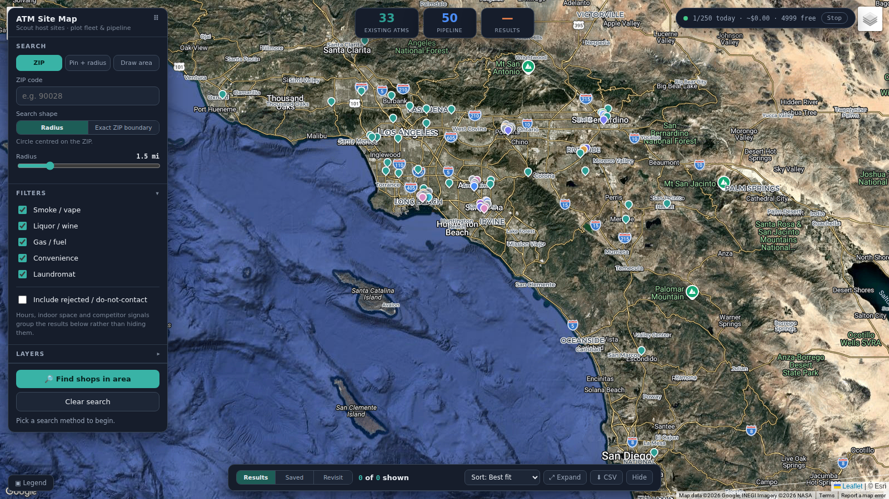

Two examples of how I moved from an unclear operating need to a working system—one for grounded access to institutional knowledge, and one for scalable prospecting—with decisions, tradeoffs, and validation made visible.
1
Turn institutional knowledge into grounded decision support
A RAG knowledge system supporting two workflows: an internal customer-support assistant and a contract Q&A assistant, both grounded in source material.
From dozens of manual lookups to thousands of mapped candidates
An automated prospecting process that expanded search coverage while keeping qualification, duplicates, pipeline state, and API spend visible.
Google Places APIAdaptive geospatial searchConservative deduplicationAPI budget controls
Start with the decision
I turn a broad request into the decision people need to make and the evidence required to support it.
Design the workflow
I translate business rules, data constraints, and operating handoffs into usable system behavior.
Validate what matters
I test the implementation, state what the evidence supports, and identify the next business measure.
The through-line is practical judgment: preserve source truth, make uncertainty visible, and measure the decision that matters—not just system activity.
Yi Shao Prepared for Jazwares
September 2026 Six-page work sample
Yi Shao · Work Sample1 / 6
Example 1 · RAG knowledge system
Turn institutional knowledge into grounded decision support
The same retrieval pattern supported two operating needs: helping agents apply prior resolutions; and helping reviewers locate the contract language behind an answer.
A · Customer support
Context
GetCoins support knowledge sat across more than five years of Zendesk email threads and recorded calls. Customer questions were highly repetitive, so past resolutions represented valuable institutional knowledge. Experienced agents knew which jurisdiction-sensitive resolutions applied; newer staff often had to search or escalate while a customer waited.
Target decision
For a live support question: what prior resolution is applicable, and what source should an agent verify before responding?
B · Contract review
Context
An operating board could show contract status, but not what the agreement actually said. Revenue share, notice contacts, renewal terms, and calculated notice deadlines remained buried in PDFs, scans, DOCX files, and filled forms.
Target decision
For a contract question: what clause answers it, where is the supporting passage, and when must a human verify the original?
My specific contribution
I owned problem framing, workflow design, implementation, test design, and rollout. I translated the operational need into a shared system pattern, then adapted ingestion, privacy controls, and interface to each use case.
5 · VerifyHuman checks source; test failures feed backlog
Support implementation
Whisper transcribed recorded calls; a Qwen stage distilled the core question, resolution, state, category, and date before indexing.
Hybrid retrieval combined semantic similarity with exact-term matching for error codes, amounts, product terms, and jurisdictions.
A live ingestion pipeline automatically adds each new support ticket and call recording to the knowledge base.
The corpus, index, and inference remained on a company local server. I delivered answers through Telegram, the company’s standard communication channel, so agents could use the system without switching tools.
Contract implementation
A local-first FastAPI application ingested PDF, DOCX, and TXT; OCR handled scans and filled-form overlays.
Clause-aware chunks, metadata filters, and click-through citations kept each answer tied to the original source.
FAISS vector search and SQLite FTS5 keyword search were fused so both semantic matches and exact contract terms could surface.
In optional cloud mode, bank and routing numbers are masked before embedding or metadata extraction.
The linked technical demo uses reconstructed agreements with mock parties, terms, and values.
Key constraint: answers had to be useful under time pressure without presenting generated text as authority. The acceptance rule was therefore “traceable enough to verify,” not “confidently phrased.”
Yi Shao · Work Sample2 / 6
Example 1 · Decisions, adoption, and evaluation
Source truth was a product requirement
Decisions I owned
Enrich firstNoisy conversations were distilled before embedding so retrieval targeted the actual problem and resolution.
Use hybrid retrievalSemantic search handled paraphrases; keyword search protected exact business terms and identifiers.
Cite the passageThe interface exposes the supporting document and text, enabling verification and correction.
Integrate with the selected workflowThe business owner selected Telegram as the company’s standard communication channel; I integrated with it to reduce adoption friction.
Stakeholders and enablement
I treated experienced support staff as owners of the tacit rule set, not merely end users. Their recurring questions informed the initial corpus, categories, and test set. Delivering answers in their existing channel reduced adoption friction and helped newer/night-shift staff use prior resolutions without waiting for a specific expert.
Previously, agents could spend several minutes searching or escalating while a customer waited. Now, the assistant returns a source-grounded answer in about 30 seconds. Faster, more reliable access gave managers greater scheduling flexibility and more confidence assigning less-experienced representatives to night shifts.
n = 5small held-back support regression; all five passed after 10 tuning questionsInternal pilot check
22 / 22synthetic questions retrieved the expected contractCurrent-implementation test
Confirmed that the labeled contract appeared in retrieved chunks.
Expected phrase
20 / 22
Tested whether retrieval reached the expected supporting passage.
Citation annotation
8 / 8
Confirmed that displayed citation labels resolved to the intended chunks.
What the results support
The support workflow showed directional improvement in lookup time and night-shift access.
Past resolutions became shared, searchable institutional knowledge instead of remaining dependent on individual agents’ memory.
Source-linked answers were delivered through the company’s established messaging platform, allowing agents to retrieve and verify information within their existing workflow.
A live ingestion pipeline kept the knowledge base current by automatically adding each new ticket and call recording.
What I would improve
Expand to 150–200 locked questions across answerability, abstention, and high-risk clauses.
Collect agent feedback at the answer level and review misses by category.
Document and test content-minimization, access, retention, and incident controls for the company-standard Telegram workflow.
Separate retrieval, citation, answer-correctness, and business-outcome dashboards.
Yi Shao · Work Sample3 / 6
Example 2 · Prospecting operations
From dozens of manual lookups to thousands of mapped candidates
The immediate problem was time. The deeper problem was knowing what had been fully covered, what may have been missed, what was duplicated, and what had already been reviewed.
Context
Business development built prospect lists by manual lookups, one location at a time. The team could not easily tell which areas had been fully covered, which viable businesses may have been missed, which records were duplicates, or which prospects had already been reviewed.
My contribution
I turned manual map searches into an automated prospecting process capable of surfacing and organizing thousands of mapped candidates in a few clicks. I built in adaptive search, qualification states, deduplication, pipeline history, revisit logic, export, and spending safeguards.
Previous and current workflow
Before
Search map → open listing → visually inspect → copy fields to Excel → reconcile duplicates → hand off list.
Controls: budget caps, caching, decision history, monotonic funnel states, and explicit unknown qualification states.

Search
Near-me, market-wide, and corridor modes support different prospecting motions.
Decision
Each candidate is marked Yes, Likely, or Unknown. Missing information stays flagged for review instead of automatically disqualifying the prospect.
Control
Every candidate can carry qualification, reason, revisit date, and an auditable decision trail.
Yi Shao · Work Sample4 / 6
Example 2 · Data readiness and business judgment
The tool surfaced a better strategy
Decisions I owned
One operating viewExisting locations, active pipeline prospects, and newly discovered candidates appeared on the same map, revealing coverage gaps and potential duplicate outreach before the next search.
Unknown ≠ noBusiness-listing metadata is often incomplete. A missing shop or ATM tag does not prove the feature is absent, so the qualification model keeps the candidate as Unknown for review instead of excluding it.
Adaptive searchThe system automatically divides dense search areas into smaller zones while leaving sparse areas intact. Cached results and fixed call budgets expand coverage without repeating unnecessary paid API requests.
Protect pipeline integrityWorkflow safeguards prevent duplicates, preserve review history, and keep prospect status consistent across searches and imports.
Make cost structuralDaily cap, hard cap, burst guard, cache, kill switch, and opt-in search were requirements—not afterthoughts.
Stakeholder influence
The users were the owner and business-development team. The owner was initially skeptical, so I waited to present until reliability and failure controls were visible. Making API cost and market coverage visible changed the discussion from whether to automate list building to how to scale outreach.
Influence did not mean winning the original argument. The system made cost and volume legible enough for the owner to choose a different, more scalable operating model.
Outcome
The professional workflow entered use in January 2026.
The team moved from researching locations one at a time to surfacing and organizing thousands of mapped candidates in a few clicks.
Existing locations, active prospects, and new candidates became visible in one shared operating view.
The owner shifted emphasis toward outbound mail and self-selected inbound onboarding.
Thousandsmapped candidates surfaced and organized in a few clicksOperational scale
One viewexisting locations, active prospects, and new candidates togetherShared pipeline
Live APIsadaptive search, caching, and hard spending limitsBuilt-in controls
Measurement and economics
The workflow tracks market coverage, qualification progress, duplicate prevention, and API usage. The linked cost model compares the labor and provider costs of manual and automated prospecting.
What I would improve
Use campaign-specific QR codes and landing pages to compare response and conversion by market or mailing batch.
Show the estimated API usage and cost before a search begins.
Add closed-shop detection and scheduled stale-data review.
Yi Shao · Work Sample5 / 6
For a deeper review
Supporting material
Source code, working demos, requirements, UAT, and the cost model are available below.